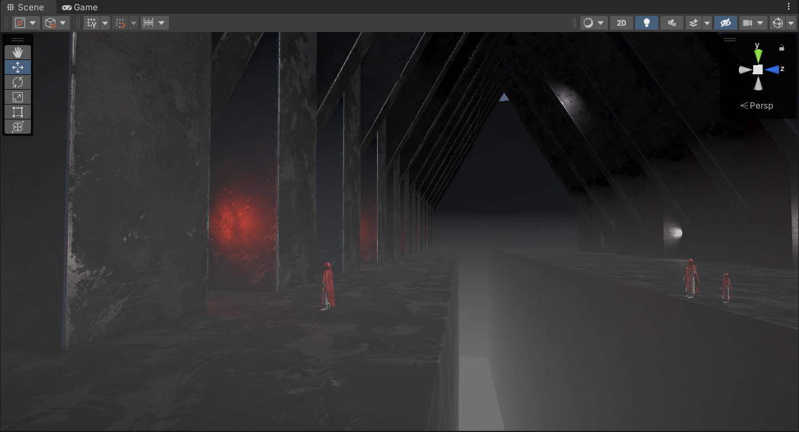

Unity URP Depth Fog
Introduction
Unity is a powerful game engine that has been used by game developers around the world to create high-quality games with various tools and features. One of these features is the Universal Rendering Pipeline (URP), which provides a lightweight rendering pipeline that is optimized for mobile and low-end hardware devices. In this blog post, we will discuss how to implement depth fog in Unity URP, which is a visual effect that creates a sense of depth and distance in a scene.
What is Depth Fog?
Depth fog is an atmospheric effect that makes distant objects appear hazy or blurry. This effect can be used to create a sense of scale in a scene and to make objects appear more realistic. Depth fog is a useful tool for game developers who want to create immersive environments that feel more natural.
How to Implement Depth Fog in Unity URP
Unity URP provides a built-in Depth Texture that can be used to implement depth fog. The Depth Texture is a grayscale texture that represents the distance between the camera and the objects in the scene. To implement depth fog in Unity URP, follow these steps:
- Create a new material and set its Shader to the URP/Lit shader.
- Enable the Depth Texture option in the material.
- Adjust the Depth Fade Start and Depth Fade Distance properties to control the distance at which the fog starts and how far it extends.
- Set the fog color in the material.
Once you have created the material with the depth texture enabled, apply it to the objects in your scene that you want to be affected by depth fog. The objects closer to the camera will be less affected by the fog, while the objects further away will appear more hazy.
Benefits of Using Depth Fog
Depth fog is a powerful tool for game developers who want to create immersive environments. By using depth fog, developers can create a sense of depth and distance in a scene, which can make the scene feel more natural and realistic. Depth fog can also be used to create a sense of scale in a scene, which is important for games that involve large environments, such as open-world games.
Conclusion
Depth fog is a useful visual effect that can be used to create a sense of depth and distance in a scene. Unity URP provides a built-in Depth Texture that can be used to implement depth fog. By following the steps outlined in this blog post, you can easily add depth fog to your Unity URP project. By using depth fog, game developers can create immersive environments that feel more natural and realistic, making for a more engaging gaming experience.
技术总结
还是用 Notion AI帮忙生成一下对于Depth Fog的介绍。
- 采样Depth
- 重建世界空间
- 三种雾效计算方式
这个系数在Unity内置雾效实现中，支持三种雾的计算方式——线性（Linear），指数（Exponential），指数的平方（Exponential Squared）。当给定距离z后。Linear的计算公式如下
$$
f;=;\frac{d_{max};-;\left|z\right|}{d_{max};-;d_{ming}}
$$
$d_{max}$和$d_{min}$分别表示受雾影响的最小距离和最大距离。
Exponential的计算公式如下 $$ f;=;e^{-d\cdot\left|z\right|} $$ d是控制雾的浓度的参数。
Exponential Squared的计算公式如下 $$ f;=;e^{-\left(d;\cdot;\left|z\right|\right)^2} $$
half4 frag(Varyings input): SV_Target
{
// 采样depth 并且重建世界空间
half2 uv = input.positionCS.xy / _ScaledScreenParams.xy;
float rawDepth = SampleSceneDepth(uv);
float3 positionWS = ComputeWorldSpacePosition(uv, rawDepth, UNITY_MATRIX_I_VP);
// 高度雾效系数 = （终止高度 - 当前像素高度）/（终止高度 - 起始高度）
float fogDensity = (_FogEnd - positionWS.y) / (_FogEnd - _FogStart);
// 计算浓度 saturate：截取到0-1
fogDensity = saturate(fogDensity * _FogDensity);
// 原始颜色
half4 finalColor = SAMPLE_TEXTURE2D(_MainTex, sampler_MainTex, uv);
// 插值原始颜色，与雾效颜色，使用雾效系数作为参数
finalColor.rgb = lerp(finalColor.rgb, _FogColor.rgb, fogDensity);
return finalColor;
}
